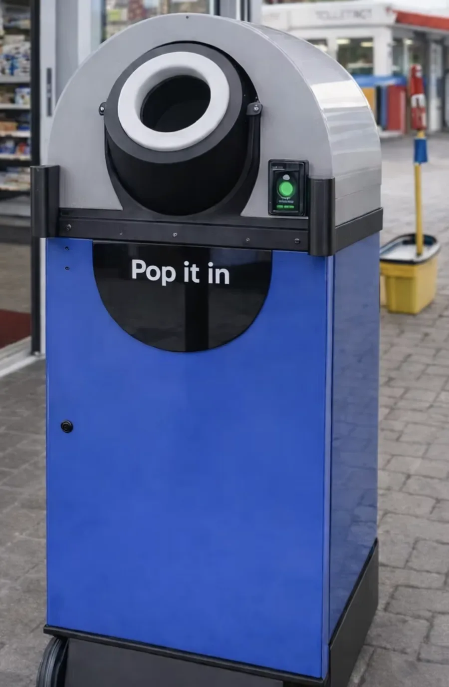

Statiegeldinname die overal past.Reverse vending that fits anywhere.
Flessen en blikjes erin, statiegeld eruit — op de plek waar mensen tóch al zijn. Zo makkelijk dat inleveren gewoon een gewoonte wordt.Bottles and cans in, deposits out — right where people already are. So easy that returning simply becomes a habit.


Eén klein apparaat. De hele innameketen.One small machine. The whole return chain.
Pop it in herkent elke fles en elk blikje, perst het ter plekke compact en betaalt het statiegeld direct uit. Geen grote inbouwmachine, geen verbouwing — neerzetten en aanzetten.Pop it in recognises every bottle and can, compacts it on the spot and pays out the deposit instantly. No bulky built-in machine, no renovation — place it and switch it on.
-
Herkent alles wat erin gaatRecognises everything that goes in360°-scanning leest elke barcode, hoe de verpakking er ook in gaat.360° scanning reads every barcode, whichever way the container goes in.
-
Perst ter plekkeCompacts on the spotDaardoor passen er honderden verpakkingen in — en hoeft er veel minder vaak geleegd en gereden te worden.So hundreds of containers fit inside — and it needs far fewer collection runs.
-
Betaalt en beloont directPays and rewards instantlyStatiegeld direct op je rekening of als voucher in je Apple of Google Wallet.Deposit straight to your account or as a voucher in Apple or Google Wallet.

"Ik gooi 'm erin op weg naar binnen. Tegen de tijd dat ik een karretje heb, staat het statiegeld al op m'n telefoon.""I pop it in on my way inside. By the time I've grabbed a cart, the deposit is already on my phone."
Elke fles die terugkomt, is er één die niet verloren gaat.Every bottle that comes back is one that isn't lost.
Statiegeld werkt alleen als inleveren makkelijk is. Door de machine naar de mensen te brengen komt meer PET en blik terug de keten in, schoon en gesorteerd, klaar voor hergebruik.Deposit return only works when returning is easy. Bringing the machine to the people returns more PET and cans to the loop, clean and sorted, ready for reuse.
Compact geperst, dus minder ritten om te legen.Compacted small, so fewer collection trips.
Optionele sortering levert schone monostromen op.Optional sorting delivers clean mono-streams.
Pop it in is gebouwd om met die golf mee te groeien.Pop it in is built to grow with that wave.
Een innamepunt dat zijn vloeroppervlak terugverdient.A recycling point that earns its floor space.
Klanten die bij jou hun statiegeld inleveren, kopen daar ook vaker iets.Customers who return their deposits at your store tend to shop there too.
Ontdek voor retailersExplore for retailersLandelijke uitrol zonder landelijke hoofdpijn.National-scale rollout without national-scale headaches.
Live telemetrie, fraudecheck bij de inworp en afrekenklare data.Live telemetry, fraud checks at the point of return and settlement-ready data.
Ontdek voor DRS-operatorsExplore for DRS operatorsNieuwsgierig hoe hij in jouw winkel staat?Curious what it looks like in your store?
Vertel ons over je locatie of markt — we nemen contact op met vervolgstappen.Tell us about your location or market — we'll get back with next steps.